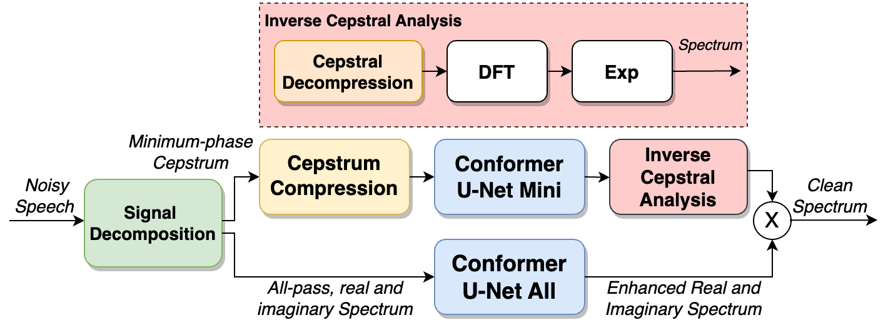
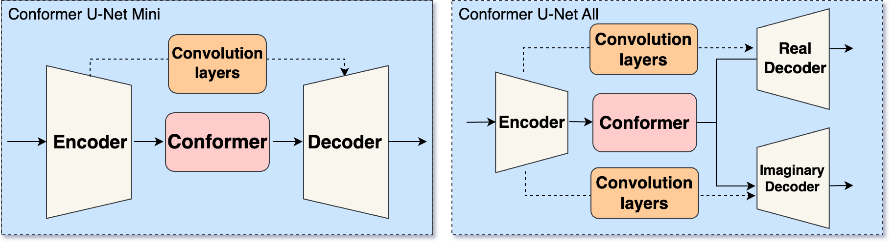

Abstract
With the development of deep neural networks(DNN), many DNN-based speech dereverberation approaches have been proposed to achieve significant improvement over the traditional methods. However, most deep learning-based dereverberation methods solely focus on suppressing time-frequency domain reverberations without utilizing cepstral domain features which are potentially useful for dereverberation. In this paper, we propose a dual-path neural network structure to separately process minimum-phase and all-pass components of single channel speech. Firstly, we decompose speech signal into minimum-phase and all-pass components in cepstral domain, then Conformer embedded U-Net is used to remove reverberations of both components. Finally, we combine these two processed components together to synthesize the enhanced output. The performance of proposed method is tested on REVERB-Challenge evaluation dataset in terms of commonly used objective metrics. Experimental results demonstrate that our method outperforms other compared methods.

Fig. 1: The schematic workflow:
Input noisy speech waveform is decomposed into minimum-phase speech in cepstral domain and all-pass speech in spectral domain, and Conformer UNet is used to separately enhance each part.

Fig. 2: Model structure of DNNs: 'Confomer U-Net Mini' outputs IRM and 'Conformer U-Net All' outputs real and imaginary spectrum.
Test Datasets
REVERB-Challenge eval dataset [1]: Public dataset with simulated and real reverberated speech data.Audio Samples
Simultaed eval dataset
| Samples | Orignal | Clean | Cepstral branch | Spectral branch | Proposed |
|---|---|---|---|---|---|
| Sample 1 | |||||
| Sample 2 | |||||
| Sample 3 | |||||
| Sample 4 | |||||
| Sample 5 |
Real eval dataset
| Samples | Orignal | Cepstral branch | Spectral branch | proposed |
|---|---|---|---|---|
| Sample 1 | ||||
| Sample 2 | ||||
| Sample 3 | ||||
| Sample 4 | ||||
| Sample 5 |
Spectrogram Samples